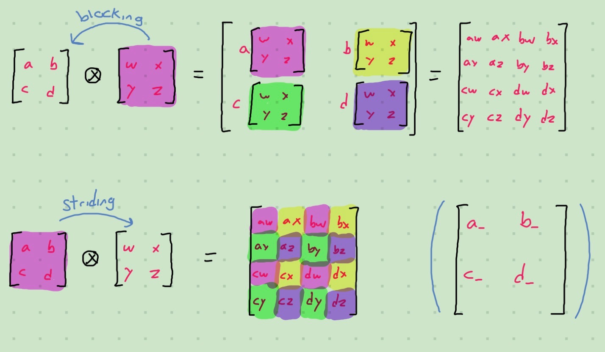
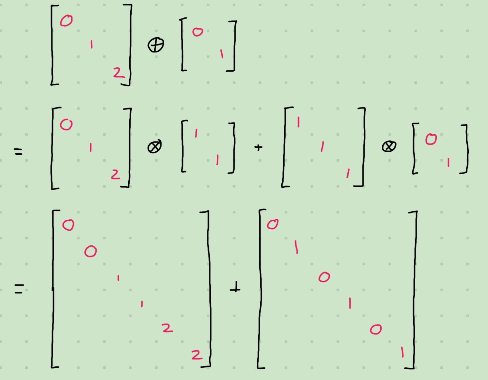
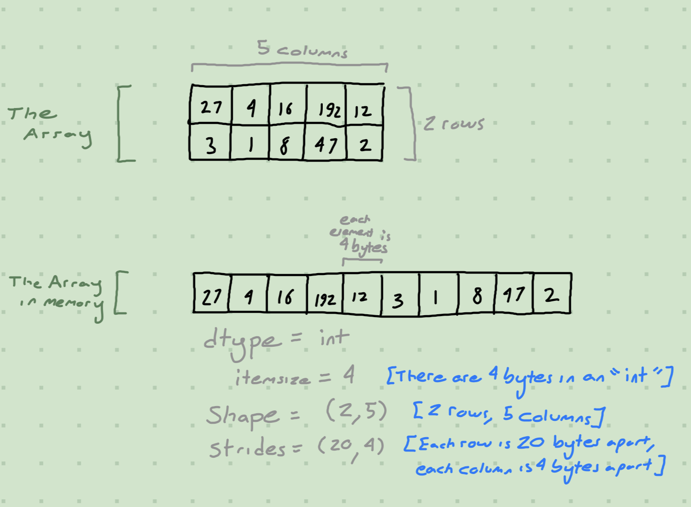
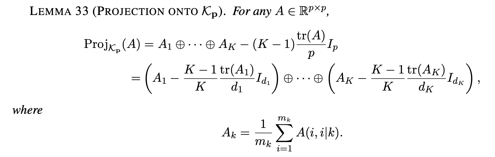

import numpy as npKronecker Sum Projections
Work
Useful
Vroomy Code
Stride Tricks are Cool!
Summary
In my work I have to deal with Kronecker Sums a lot; these are ultimately built out of Kronecker Products, which are represented by \(\otimes\) work like this:

Kronecker Sums are represented by \(\oplus\) and are defined as \(A \oplus B = A \otimes I + I \otimes B\). They have a convenient property that allows us to factor out eigenvectors: \(A \oplus B = \left(V_A \otimes V_B\right)\left(\Lambda_A \oplus \Lambda_B\right)\left(V_A^T \otimes V_B^T\right)\), which means that for most things I only need to consider the Kronecker Sum of diagonal matrices.
In my work I have two coding problems related to this task:
- Finding a fast algorithm for the Kronecker Sum of many diagonal matrices
- Finding a fast algorithm to KS-decompose a diagonal matrix
By KS-decompose, I mean to represent a matrix as a Kronecker Sum of other matrices of a given size. Most matrices are not perfectly KS-decomposable; specifically we want the decomposition that minimizes the Frobenius Distance between the original matrix and the proposed decomposition. We won’t go over the specifics of Frobenius Distance, but it’s basically the matrix analog for the Euclidean Distance between vectors.
Greenewald, Zhou, and Hero (2017) have already given an analytic formula for the KS-decomposition, which we’ll use later. But we’ll tackle the Kronecker Sum algorithm first.
Fast Diagonal Kronecker Sum
There is a function scipy.sparse.kronsum which may be useful, but I’ve had problems with the sparse library in the past so I’ll wait until its a bit more mature before I’ll consider relying on it. Furthermore, it probably won’t be very useful for diagonal Kronecker Sums because it will have been built for a whole Kronecker Sum.
By the way, here’s how you would do a whole Kronecker Sum:
def kron_sum_base_case(
A: "A 2-dimensional square numpy array of any size",
B: "A 2-dimensional square numpy array of any size"
) -> "kronsum(A, B)":
"""
Computes the kronsum of two square input matrices
"""
a, _ = A.shape
b, _ = B.shape
return np.kron(A, np.eye(b)) + np.kron(np.eye(a), B)
def kron_sum(
*mats: "Sequence of 2-dimensional square numpy arrays of any size"
) -> "kronsum(mats[0], ..., mats[-1])":
"""
Computes the kronsum of multiple matrices,
recursively by relying on `kron_sum_base_case`
for the 2-matrix case
"""
K = len(mats)
if K == 0:
raise Exception("Can't kronsum nothing!")
if K == 1:
return mats[0]
if K == 2:
return kron_sum_base_case(mats[0], mats[1])
return kron_sum(
kron_sum_base_case(mats[0], mats[1]),
*mats[2:]
)Of course, for diagonal matrices we can do better by observing the pattern of repetitions of the diagonal elements.

We can incorporate this into our code:
def kron_sum_diag_base_case(
a: "NumPy vector of shape (m,)",
b: "NumPy vector of shape (n,)"
) -> "NumPy vector of shape (mn,)":
"""
Computes the diagonal of the kronecker sum of two diagonal matrixes,
given as input the diagonals of the two input matrices
"""
m, = a.shape
n, = b.shape
# Result is sum of [a1 ... a1 a2 ... a2 ... am ... am]
# and [b1 b2 ... bn b1 b2 ... bn ... b1 b2 ... bn]
# So we can use `repeat` and `tile` to accomplish this!
A = np.repeat(a, (n,))
B = np.tile(b, (m,))
return (A + B)
def kron_sum_diag(
*vecs: "Sequence of NumPy vectors representing array diagonals"
) -> "diag(kronsum(diag(vecs[0]), ..., diag(vecs[-1])))":
"""
Computes the kronsum of multiple vectors,
recursively by relying on `kron_sum_diag_base_case`
for the 2-vector case
"""
K = len(vecs)
if K == 0:
raise Exception("Can't kronsum nothing!")
if K == 1:
return vecs[0]
if K == 2:
return kron_sum_diag_base_case(vecs[0], vecs[1])
return kron_sum_diag(
kron_sum_diag_base_case(vecs[0], vecs[1]),
*vecs[2:]
)Let’s compare them using line_profiler: it only runs the code once so in theory it shouldn’t be used for rigorous comparisons, but the difference should be clear between the two and the output is so much more informative:
args = [
np.diag(np.arange(10)),
np.diag(np.arange(10)),
np.diag(np.arange(10))
]Timer unit: 1e-06 s
Total time: 0.020624 s
File: /var/folders/k0/qy74mdx10qs493700g929k5h0000gn/T/ipykernel_36281/668194435.py
Function: kron_sum_base_case at line 1
Line # Hits Time Per Hit % Time Line Contents
==============================================================
1 def kron_sum_base_case(
2 A: "A 2-dimensional square numpy array of any size",
3 B: "A 2-dimensional square numpy array of any size"
4 ) -> "kronsum(A, B)":
5 """
6 Computes the kronsum of two square input matrices
7 """
8 2 236.0 118.0 1.1 a, _ = A.shape
9 2 6.0 3.0 0.0 b, _ = B.shape
10 2 20382.0 10191.0 98.8 return np.kron(A, np.eye(b)) + np.kron(np.eye(a), B)
Total time: 0.021422 s
File: /var/folders/k0/qy74mdx10qs493700g929k5h0000gn/T/ipykernel_36281/668194435.py
Function: kron_sum at line 12
Line # Hits Time Per Hit % Time Line Contents
==============================================================
12 def kron_sum(
13 *mats: "Sequence of 2-dimensional square numpy arrays of any size"
14 ) -> "kronsum(mats[0], ..., mats[-1])":
15 """
16 Computes the kronsum of multiple matrices,
17 recursively by relying on `kron_sum_base_case`
18 for the 2-matrix case
19 """
20 2 215.0 107.5 1.0 K = len(mats)
21 2 169.0 84.5 0.8 if K == 0:
22 raise Exception("Can't kronsum nothing!")
23 2 4.0 2.0 0.0 if K == 1:
24 return mats[0]
25 2 3.0 1.5 0.0 if K == 2:
26 1 15203.0 15203.0 71.0 return kron_sum_base_case(mats[0], mats[1])
27 3 80.0 26.7 0.4 return kron_sum(
28 1 5743.0 5743.0 26.8 kron_sum_base_case(mats[0], mats[1]),
29 1 5.0 5.0 0.0 *mats[2:]
30 )args = [
np.arange(10),
np.arange(10),
np.arange(10)
]Timer unit: 1e-06 s
Total time: 0.000238 s
File: /var/folders/k0/qy74mdx10qs493700g929k5h0000gn/T/ipykernel_36281/2323241970.py
Function: kron_sum_diag_base_case at line 1
Line # Hits Time Per Hit % Time Line Contents
==============================================================
1 def kron_sum_diag_base_case(
2 a: "NumPy vector of shape (m,)",
3 b: "NumPy vector of shape (n,)"
4 ) -> "NumPy vector of shape (mn,)":
5 """
6 Computes the diagonal of the kronecker sum of two diagonal matrixes,
7 given as input the diagonals of the two input matrices
8 """
9 2 5.0 2.5 2.1 m, = a.shape
10 2 2.0 1.0 0.8 n, = b.shape
11
12 # Result is sum of [a1 ... a1 a2 ... a2 ... am ... am]
13 # and [b1 b2 ... bn b1 b2 ... bn ... b1 b2 ... bn]
14 # So we can use `repeat` and `tile` to accomplish this!
15 2 78.0 39.0 32.8 A = np.repeat(a, (n,))
16 2 116.0 58.0 48.7 B = np.tile(b, (m,))
17 2 37.0 18.5 15.5 return (A + B)
Total time: 0.000317 s
File: /var/folders/k0/qy74mdx10qs493700g929k5h0000gn/T/ipykernel_36281/2323241970.py
Function: kron_sum_diag at line 19
Line # Hits Time Per Hit % Time Line Contents
==============================================================
19 def kron_sum_diag(
20 *vecs: "Sequence of NumPy vectors representing array diagonals"
21 ) -> "diag(kronsum(diag(vecs[0]), ..., diag(vecs[-1])))":
22 """
23 Computes the kronsum of multiple vectors,
24 recursively by relying on `kron_sum_diag_base_case`
25 for the 2-vector case
26 """
27 2 9.0 4.5 2.8 K = len(vecs)
28 2 5.0 2.5 1.6 if K == 0:
29 raise Exception("Can't kronsum nothing!")
30 2 1.0 0.5 0.3 if K == 1:
31 return vecs[0]
32 2 2.0 1.0 0.6 if K == 2:
33 1 89.0 89.0 28.1 return kron_sum_diag_base_case(vecs[0], vecs[1])
34 3 37.0 12.3 11.7 return kron_sum_diag(
35 1 171.0 171.0 53.9 kron_sum_diag_base_case(vecs[0], vecs[1]),
36 1 3.0 3.0 0.9 *vecs[2:]
37 )Other than speed, a major problem with the non-diag-specific code is that you’ll run out of memory for even modestly sized outputs: \(\mathrm{numrows}\left[\oplus_\ell A_\ell \right] = \prod_\ell \mathrm{numrows}\left[A_\ell \right]\). When modelling the whole matrix, you need to store \(\prod_\ell \mathrm{numrows}\left[A_\ell \right]^2\), but by restricting ourselves to the diagonal you only need \(\prod_\ell \mathrm{numrows}\left[A_\ell \right]\).
We can see from the outputs of line_profiler that the grand majority of the runtime is spent in np.repeat and np.tile, so we might wish to find a solution that does not require these. Also, the recursive nature of the algorithm is a bit annoying, it’d be nice if we could compute it in a single pass!
For this we’ll need to understand the NumPy Memory Model, which consists of shapes and strides:

In essence, every array is actually linear in memory, and we describe the higher-dimensional structure with a shape and some strides. Strides tell us how far our pointer must move to get to the next element along that axis.
Changing the shape and strides of an array is basically free, as none of the array’s memory needs to change1. np.lib.stride_tricks.as_strided is a function that gives us direct control over shape and strides, which we’ll use to construct a faster Kronecker Sum algorithm.
The first thing we want to do is create a full-sized empty output vector with np.zeros. We’ll then reshape this vector in such a way so that the elements we want to affect are batched by the first two dimensions. Why would we do this? Because numpy’s memory format doesn’t directly support “block-strides”, i.e. there’s no direct way to grab:
[x x x x] x x x x [x x x x] x x x xYou can only either grab blocks:
[x x x x x x x x] x x x x x x x xOr strides:
[x] x [x] x [x] x [x] x [x] x [x] x [x] x [x] x [x] x [x] xBut with stride_tricks we can massage the data into a block-stride format, at the cost of an extra dimension, via using a view (NOT a copy), making this quite an efficient operation! Since it is a view, we can assign to it and it will update the original array.
Suppose we reshaped our output \(w_\ell\) into \((a_\ell, b_\ell, c_\ell)\) where \(c_\ell\) is the size of our \(\ell\)th input \(v_\ell\). Then \(w_\ell += v_\ell\) will use broadcasting2 to add \(v_\ell\) to every slice of the matrix along the first two batch dimensions.
Why would we do this? Well just like we saw earlier, Kronecker Sums can be represented as the sum of one of the inputs repeated in blocks and the other repeated in strides, when only considering two inputs. When considering the middle inputs, they have a particular block-strided structure; I encourage you to get out some scratch paper and work it out yourself.
Anyways, here’s the code:
def kron_sum_diag_fast(
*lams: "1D vectors to be kronsummed"
):
# Setup
ds = [len(lam) for lam in lams]
d_lefts = np.cumprod([1] + ds[:-1]).astype(int)
d_rights = np.cumprod([1] + ds[::-1])[-2::-1].astype(int)
total = d_rights[0] * ds[0]
out = np.zeros(total)
# We're gonna be really naughty here and use stride_tricks
# This is going to reshape our vector in a way so that the elements
# we want to affect are batched by the first two dimensions
for i in range(len(lams)):
sz = lams[i].strides[0]
toset = np.lib.stride_tricks.as_strided(
out,
shape=(
d_lefts[i], # The skips
d_rights[i], # The blocks
ds[i] # What we want
),
strides=(
sz * ds[i] * d_rights[i],
sz * 1,
sz * d_rights[i],
)
)
toset += lams[i]
return outLet’s see if it’s really any faster:
args = [
np.arange(100),
np.arange(100),
np.arange(100)
]Timer unit: 1e-06 s
Total time: 0.027999 s
File: /var/folders/k0/qy74mdx10qs493700g929k5h0000gn/T/ipykernel_36281/2323241970.py
Function: kron_sum_diag_base_case at line 1
Line # Hits Time Per Hit % Time Line Contents
==============================================================
1 def kron_sum_diag_base_case(
2 a: "NumPy vector of shape (m,)",
3 b: "NumPy vector of shape (n,)"
4 ) -> "NumPy vector of shape (mn,)":
5 """
6 Computes the diagonal of the kronecker sum of two diagonal matrixes,
7 given as input the diagonals of the two input matrices
8 """
9 2 13.0 6.5 0.0 m, = a.shape
10 2 3.0 1.5 0.0 n, = b.shape
11
12 # Result is sum of [a1 ... a1 a2 ... a2 ... am ... am]
13 # and [b1 b2 ... bn b1 b2 ... bn ... b1 b2 ... bn]
14 # So we can use `repeat` and `tile` to accomplish this!
15 2 19483.0 9741.5 69.6 A = np.repeat(a, (n,))
16 2 1027.0 513.5 3.7 B = np.tile(b, (m,))
17 2 7473.0 3736.5 26.7 return (A + B)
Total time: 0.028123 s
File: /var/folders/k0/qy74mdx10qs493700g929k5h0000gn/T/ipykernel_36281/2323241970.py
Function: kron_sum_diag at line 19
Line # Hits Time Per Hit % Time Line Contents
==============================================================
19 def kron_sum_diag(
20 *vecs: "Sequence of NumPy vectors representing array diagonals"
21 ) -> "diag(kronsum(diag(vecs[0]), ..., diag(vecs[-1])))":
22 """
23 Computes the kronsum of multiple vectors,
24 recursively by relying on `kron_sum_diag_base_case`
25 for the 2-vector case
26 """
27 2 11.0 5.5 0.0 K = len(vecs)
28 2 5.0 2.5 0.0 if K == 0:
29 raise Exception("Can't kronsum nothing!")
30 2 2.0 1.0 0.0 if K == 1:
31 return vecs[0]
32 2 2.0 1.0 0.0 if K == 2:
33 1 27184.0 27184.0 96.7 return kron_sum_diag_base_case(vecs[0], vecs[1])
34 3 8.0 2.7 0.0 return kron_sum_diag(
35 1 906.0 906.0 3.2 kron_sum_diag_base_case(vecs[0], vecs[1]),
36 1 5.0 5.0 0.0 *vecs[2:]
37 )args = [
np.arange(100),
np.arange(100),
np.arange(100)
]Timer unit: 1e-06 s
Total time: 0.008428 s
File: /var/folders/k0/qy74mdx10qs493700g929k5h0000gn/T/ipykernel_36281/219179398.py
Function: kron_sum_diag_fast at line 1
Line # Hits Time Per Hit % Time Line Contents
==============================================================
1 def kron_sum_diag_fast(
2 *lams: "1D vectors to be kronsummed"
3 ):
4 # Setup
5 1 19.0 19.0 0.2 ds = [len(lam) for lam in lams]
6 1 188.0 188.0 2.2 d_lefts = np.cumprod([1] + ds[:-1]).astype(int)
7 1 68.0 68.0 0.8 d_rights = np.cumprod([1] + ds[::-1])[-2::-1].astype(int)
8 1 16.0 16.0 0.2 total = d_rights[0] * ds[0]
9 1 1990.0 1990.0 23.6 out = np.zeros(total)
10
11 # We're gonna be really naughty here and use stride_tricks
12 # This is going to reshape our vector in a way so that the elements
13 # we want to affect are batched by the first two dimensions
14 4 42.0 10.5 0.5 for i in range(len(lams)):
15 3 25.0 8.3 0.3 sz = lams[i].strides[0]
16 6 416.0 69.3 4.9 toset = np.lib.stride_tricks.as_strided(
17 3 6.0 2.0 0.1 out,
18 3 9.0 3.0 0.1 shape=(
19 3 29.0 9.7 0.3 d_lefts[i], # The skips
20 3 21.0 7.0 0.2 d_rights[i], # The blocks
21 3 8.0 2.7 0.1 ds[i] # What we want
22 ),
23 3 5.0 1.7 0.1 strides=(
24 3 22.0 7.3 0.3 sz * ds[i] * d_rights[i],
25 3 6.0 2.0 0.1 sz * 1,
26 3 8.0 2.7 0.1 sz * d_rights[i],
27 )
28 )
29 3 5548.0 1849.3 65.8 toset += lams[i]
30
31 1 2.0 2.0 0.0 return outHonestly, it’s hard to tell. If we rerun the code a bit then the values fluctuate. They seem to on average be more expensive for the non-fast version of the algorithm, but we should use timeit to fully compare:
args = [
np.arange(100),
np.arange(100),
np.arange(100)
]4.19 ms ± 132 µs per loop (mean ± std. dev. of 7 runs, 100 loops each)
1.31 ms ± 5.04 µs per loop (mean ± std. dev. of 7 runs, 1,000 loops each)With how much more conceptually complicated the fast version is, it’s a bit of a shame that it only really achieves a 3x speedup. Maybe things will look better with larger inputs? But it’s hard to test large inputs without running out of memory.
args = [
np.arange(1000),
np.arange(100),
np.arange(100)
]47.5 ms ± 3.18 ms per loop (mean ± std. dev. of 7 runs, 10 loops each)
15.3 ms ± 321 µs per loop (mean ± std. dev. of 7 runs, 100 loops each)args = [
np.arange(10000),
np.arange(10000)
]1.53 s ± 47.8 ms per loop (mean ± std. dev. of 7 runs, 1 loop each)
350 ms ± 2.08 ms per loop (mean ± std. dev. of 7 runs, 1 loop each)kron_sum_diag_fast is definitely an improvement, but not quite the order-of-magnitude improvement I was hoping for! Based on the outputs of line_profiler, ~90% of the runtime of kron_sum_diag_fast comes from the memory allocation of the output vector and the literal summing of the diagonals. It is unlikely to be able to go much faster - in fact no matter what we do we cannot make it more than 4x faster because the memory allocation of the output takes ~25% of the runtime.
KS-Decompositions
We now start our second task; finding the best KS-decomposition for a matrix.
The mathematical solution is due to Greenewald, Zhou, and Hero (2017):

We can calculate the \(A_k\) as follows:
def factorwise_average(
mat: "Mat to be factored",
ds: "Dimensions of factor matrices",
k: "Dimension"
):
d = ds[k]
d_left = np.prod(ds[:k]).astype(int)
d_right = np.prod(ds[k+1:]).astype(int)
rs, cs = mat.strides
# See code for `factorwise_matrix` for full A(i,j|k) computation
# (in the Playground section at the end)
# But here we only need the diagonals so actually we can express this
# by summing the strides together (so each stride goes the length of
# an axis plus 1 to stay along the diagonal
out = np.lib.stride_tricks.as_strided(
mat,
shape=(
d_left,
d_right,
d,
d
),
strides=(
rs * d_right * d + cs * d_right * d,
rs * 1 + cs * 1,
rs * d_right,
cs * d_right,
)
)
return out.mean(axis=(0, 1))After which it is easy to compute individual factors:
def kronecker_factor(
mat: "Mat to be factored",
ds: "Dimensions of factor matrices",
k: "Dimension"
):
K = len(ds)
A = factorwise_average(mat, ds, k)
offset = (K-1)/K * np.trace(A) / ds[k]
return A - offset * np.eye(A.shape[0])One thing to note about their math is that they assume the factors have a trace of zero (because it is not actually possible to recover the exact diagonals in a KS-decomposition). Let’s test to see if it actually can recover the factors:
# Subtractions are done to enforce a trace of zero
factor_1 = np.arange(9).reshape(3, 3) - 4
factor_2 = np.arange(4).reshape(2, 2) - 1.5
b = kron_sum(factor_1, factor_2)
print(factor_1 == kronecker_factor(b, [3, 2], 0))
print(factor_2 == kronecker_factor(b, [3, 2], 1))[[ True True True]
[ True True True]
[ True True True]]
[[ True True]
[ True True]]Awesome! But as mentioned before, we often only care about KS-decomposing diagonal matrices, so we can tune this code to address them specifically!
def factorwise_average_diag(
vec: "Diagonal of mat to be factored",
ds: "Dimensions of factor matrices",
k: "Dimension"
):
d = ds[k]
d_left = np.prod(ds[:k]).astype(int)
d_right = np.prod(ds[k+1:]).astype(int)
rs = vec.strides[0]
# See code for `factorwise_matrix` for full A(i,j|k) computation
# (in the Playground section at the end)
# But here we only need the diagonals so actually we can express this
# by summing the strides together (so each stride goes the length of
# an axis plus 1 to stay along the diagonal
out = np.lib.stride_tricks.as_strided(
vec,
shape=(
d_left,
d_right,
d,
),
strides=(
rs * d_right * d,
rs * 1,
rs * d_right,
)
)
return out.mean(axis=(0, 1))def kronecker_factor_diag(
vec: "Diag of mat to be factored",
ds: "Dimensions of factor matrices",
k: "Dimension"
):
K = len(ds)
A = factorwise_average_diag(vec, ds, k)
offset = (K-1)/K * A.sum() / ds[k]
return A - offsetd_1 = 50
d_2 = 100
d_3 = 150
factor_1 = np.arange(d_1).astype(float)
factor_1 -= factor_1.sum() / d_1
factor_2 = np.arange(d_2).astype(float)
factor_2 -= factor_2.sum() / d_2
factor_3 = np.arange(d_3).astype(float)
factor_3 -= factor_3.sum() / d_3
b = kron_sum_diag_fast(factor_1, factor_2, factor_3)
print((factor_1 == kronecker_factor_diag(b, [d_1, d_2, d_3], 0)).all())
print((factor_2 == kronecker_factor_diag(b, [d_1, d_2, d_3], 1)).all())
print((factor_3 == kronecker_factor_diag(b, [d_1, d_2, d_3], 2)).all())True
True
TrueThe last question we should ask is: is our code fast?
to_run = lambda: [
kronecker_factor_diag(b, [d_1, d_2, d_3], 0),
kronecker_factor_diag(b, [d_1, d_2, d_3], 1),
kronecker_factor_diag(b, [d_1, d_2, d_3], 2)
]643 µs ± 10.2 µs per loop (mean ± std. dev. of 7 runs, 1,000 loops each)Timer unit: 1e-06 s
Total time: 0.00126 s
File: /var/folders/k0/qy74mdx10qs493700g929k5h0000gn/T/ipykernel_36281/1788147058.py
Function: <lambda> at line 1
Line # Hits Time Per Hit % Time Line Contents
==============================================================
1 1 1.0 1.0 0.1 to_run = lambda: [
2 1 547.0 547.0 43.4 kronecker_factor_diag(b, [d_1, d_2, d_3], 0),
3 1 366.0 366.0 29.0 kronecker_factor_diag(b, [d_1, d_2, d_3], 1),
4 1 346.0 346.0 27.5 kronecker_factor_diag(b, [d_1, d_2, d_3], 2)
5 ]
Total time: 0.001157 s
File: /var/folders/k0/qy74mdx10qs493700g929k5h0000gn/T/ipykernel_36281/1895741134.py
Function: factorwise_average_diag at line 1
Line # Hits Time Per Hit % Time Line Contents
==============================================================
1 def factorwise_average_diag(
2 vec: "Diagonal of mat to be factored",
3 ds: "Dimensions of factor matrices",
4 k: "Dimension"
5 ):
6 3 3.0 1.0 0.3 d = ds[k]
7 3 103.0 34.3 8.9 d_left = np.prod(ds[:k]).astype(int)
8 3 44.0 14.7 3.8 d_right = np.prod(ds[k+1:]).astype(int)
9
10 3 4.0 1.3 0.3 rs = vec.strides[0]
11
12 # See code for `factorwise_matrix` for full A(i,j|k) computation
13 # (in the Playground section at the end)
14 # But here we only need the diagonals so actually we can express this
15 # by summing the strides together (so each stride goes the length of
16 # an axis plus 1 to stay along the diagonal
17 6 62.0 10.3 5.4 out = np.lib.stride_tricks.as_strided(
18 3 0.0 0.0 0.0 vec,
19 3 2.0 0.7 0.2 shape=(
20 3 2.0 0.7 0.2 d_left,
21 3 2.0 0.7 0.2 d_right,
22 3 2.0 0.7 0.2 d,
23 ),
24 3 3.0 1.0 0.3 strides=(
25 3 5.0 1.7 0.4 rs * d_right * d,
26 3 3.0 1.0 0.3 rs * 1,
27 3 3.0 1.0 0.3 rs * d_right,
28 )
29 )
30
31 3 919.0 306.3 79.4 return out.mean(axis=(0, 1))
Total time: 0.001231 s
File: /var/folders/k0/qy74mdx10qs493700g929k5h0000gn/T/ipykernel_36281/494531187.py
Function: kronecker_factor_diag at line 1
Line # Hits Time Per Hit % Time Line Contents
==============================================================
1 def kronecker_factor_diag(
2 vec: "Diag of mat to be factored",
3 ds: "Dimensions of factor matrices",
4 k: "Dimension"
5 ):
6 3 1.0 0.3 0.1 K = len(ds)
7 3 1190.0 396.7 96.7 A = factorwise_average_diag(vec, ds, k)
8 3 25.0 8.3 2.0 offset = (K-1)/K * A.sum() / ds[k]
9 3 15.0 5.0 1.2 return A - offsetWell, it seems pretty fast as it’s measured in microseconds. Basically all the runtime is in taking the mean along the axes. Since we’re computing each factor separately, there may be a really smart way to compute these means jointly to save time. However if we note that the calls to np.prod take up ~10% of the runtime, and realize just how cheap that option ‘should’ be3, we shouldn’t expect to be able to get more than an order of magnitude improvement no matter what we do4.
The datasets I’ll be using this for won’t really exceed 4000 by 4000, as memory constaints prevent much more (this is part of a larger algorithm whose outputs for 4000 by 4000 inputs would be size \(2 * 4000^2 = 128 \hspace{2pt}\mathrm{megabytes}\) assuming 32-bit floats); quite hefty! Also the algorithm would require an eigendecomposition on two 4000 by 4000 matrices, which takes more than a minute on my computer which is more than I have the patience for 😅 .
d_1 = 4000
d_2 = 4000
factor_1 = np.arange(d_1).astype(float)
factor_1 -= factor_1.sum() / d_1
factor_2 = np.arange(d_2).astype(float)
factor_2 -= factor_2.sum() / d_2
c = kron_sum_diag_fast(factor_1, factor_2)
to_run = lambda: [
kronecker_factor_diag(b, [d_1, d_2], 0),
kronecker_factor_diag(b, [d_1, d_2], 1),
]7.23 ms ± 94.3 µs per loop (mean ± std. dev. of 7 runs, 100 loops each)Thus in the largest input we’re considering, we can run this step 100 times a second, i.e. 6000 times before it catches up to the price of an eigendecomposition. That’s good because our algorithm is iterative so we want to ensure it can be run a large amount of times!
Playground
Playground: My experiments to get this to work
Warning: I’ve made no attempt to clean this stuff up, or explain it whatsoever.
import numpy as npOld code
def factorwise_matrix(
mat: "Mat to be factored",
ds: "Dimensions of factor matrices",
idx: "Indices",
k: "Dimension"
):
"""
A(i, j | k) notation from TeraLasso
"""
# Stride-blocking based off of StackOverflow answer:
# https://stackoverflow.com/a/8070716/10642078
d = ds[k]
d_left = np.prod(ds[:k]).astype(int)
d_right = np.prod(ds[k+1:]).astype(int)
size = d_left * d * d_right
sz = mat.itemsize
shape = (d * d_right, d * d_right, d_left, d_left)
strides = sz * np.array([
mat.shape[0] * d_left,
d_left,
mat.shape[0],
1
])
blocks = np.lib.stride_tricks.as_strided(mat, shape=shape, strides=strides)
# Now that we've got the strides, we need to pick the right one based on the idxs
i, j = idx
# Last two dimensions are the sizes of the blocks
specific_block = blocks[i::d, j::d]
# Now we need to de-stride the block
return np.concatenate(
np.concatenate(
specific_block,
axis=1
),
axis=1
)
n=12
m=12
a = np.arange(n*m).reshape(n,m)
print(a)
out = factorwise_matrix(a, [3, 2, 2], (0, 0), 0)
outdef factorwise_matrix(
mat: "Mat to be factored",
ds: "Dimensions of factor matrices",
idx: "Indices",
k: "Dimension"
):
"""
A(i, j | k) notation from TeraLasso
"""
i, j = idx
d = ds[k]
d_left = np.prod(ds[:k]).astype(int)
d_right = np.prod(ds[k+1:]).astype(int)
#return mat[i*d::d_left, j*d::d_left][:d, :d]
rs, cs = mat.strides
out = np.lib.stride_tricks.as_strided(
mat,
shape=(
d_left,
d_left,
d_right,
d_right,
d,
d
),
strides=(
rs * d_right * d,
cs * d_right * d,
rs * 1,
cs * 1,
rs * d_right,
cs * d_right,
)
)
return out
n=12
m=12
a = np.arange(n*m).reshape(n,m)
print(a)
out = factorwise_matrix(a, [3, 2, 2], (0, 0), 1)
print(out.shape)
print(out.strides)
print(out.sum() == a.sum())
#out[[ 0 1 2 3 4 5 6 7 8 9 10 11]
[ 12 13 14 15 16 17 18 19 20 21 22 23]
[ 24 25 26 27 28 29 30 31 32 33 34 35]
[ 36 37 38 39 40 41 42 43 44 45 46 47]
[ 48 49 50 51 52 53 54 55 56 57 58 59]
[ 60 61 62 63 64 65 66 67 68 69 70 71]
[ 72 73 74 75 76 77 78 79 80 81 82 83]
[ 84 85 86 87 88 89 90 91 92 93 94 95]
[ 96 97 98 99 100 101 102 103 104 105 106 107]
[108 109 110 111 112 113 114 115 116 117 118 119]
[120 121 122 123 124 125 126 127 128 129 130 131]
[132 133 134 135 136 137 138 139 140 141 142 143]]
(3, 3, 2, 2, 2, 2)
(384, 32, 96, 8, 192, 16)
Truedef factorwise_average(
mat: "Mat to be factored",
ds: "Dimensions of factor matrices",
k: "Dimension"
):
d = ds[k]
d_left = np.prod(ds[:k]).astype(int)
d_right = np.prod(ds[k+1:]).astype(int)
d_non = d_left * d_right
out = np.zeros((d, d))
for i in range(d_non):
out += factorwise_matrix(mat, ds, (i, i), k)
return out / d_non
factorwise_average(a, [2, 2, 2], 1)def factorwise_average(
mat: "Mat to be factored",
ds: "Dimensions of factor matrices",
k: "Dimension"
):
d = ds[k]
d_left = np.prod(ds[:k]).astype(int)
d_right = np.prod(ds[k+1:]).astype(int)
rs, cs = mat.strides
# See code for `factorwise_matrix` for full A(i,j|k) computation
# But here we only need the diagonals so actually we can express this
# by summing the strides together (so each stride goes the length of
# an axis plus 1 to stay along the diagonal
out = np.lib.stride_tricks.as_strided(
mat,
shape=(
d_left,
d_right,
d,
d
),
strides=(
rs * d_right * d + cs * d_right * d,
rs * 1 + cs * 1,
rs * d_right,
cs * d_right,
)
)
return out.mean(axis=(0, 1))
n=12
m=12
a = np.arange(n*m).reshape(n,m)
print(a)
out = factorwise_average(a, [3, 2, 2], 1)
out[[ 0 1 2 3 4 5 6 7 8 9 10 11]
[ 12 13 14 15 16 17 18 19 20 21 22 23]
[ 24 25 26 27 28 29 30 31 32 33 34 35]
[ 36 37 38 39 40 41 42 43 44 45 46 47]
[ 48 49 50 51 52 53 54 55 56 57 58 59]
[ 60 61 62 63 64 65 66 67 68 69 70 71]
[ 72 73 74 75 76 77 78 79 80 81 82 83]
[ 84 85 86 87 88 89 90 91 92 93 94 95]
[ 96 97 98 99 100 101 102 103 104 105 106 107]
[108 109 110 111 112 113 114 115 116 117 118 119]
[120 121 122 123 124 125 126 127 128 129 130 131]
[132 133 134 135 136 137 138 139 140 141 142 143]]array([[58.5, 60.5],
[82.5, 84.5]])def kronecker_factor(
mat: "Mat to be factored",
ds: "Dimensions of factor matrices",
k: "Dimension"
):
K = len(ds)
A = factorwise_average(mat, ds, k)
offset = (K-1)/K * np.trace(A) / ds[k]
return A - offset * np.eye(A.shape[0])
kronecker_factor(a, [2, 2, 2], 1)array([[ 2.16666667, 34.5 ],
[56.5 , 28.16666667]])def kron_sum(A, B):
"""
Computes the kronecker sum of two square input matrices
Note: `scipy.sparse.kronsum` is a thing that would
be useful - but it seems that `scipy.sparse` is not
yet a mature library to use.
"""
a, _ = A.shape
b, _ = B.shape
return np.kron(A, np.eye(b)) + np.kron(np.eye(a), B)factor_1 = np.arange(9).reshape(3, 3) - 4
factor_2 = np.arange(9).reshape(3, 3) - 4
b = kron_sum(factor_1, factor_2)
print(factor_1 == kronecker_factor(b, [3, 3], 0))
print(factor_2 == kronecker_factor(b, [3, 3], 1))[[ True True True]
[ True True True]
[ True True True]]
[[ True True True]
[ True True True]
[ True True True]]factor_1 = np.arange(9).reshape(3, 3) - 4
factor_2 = np.arange(9).reshape(3, 3)
factor_2 = factor_2 @ factor_2 - 60
b = kron_sum(factor_1, factor_2)
print(factor_1 == kronecker_factor(b, [3, 3], 0))
print(factor_2 == kronecker_factor(b, [3, 3], 1))[[ True True True]
[ True True True]
[ True True True]]
[[ True True True]
[ True True True]
[ True True True]]factor_1 = np.arange(9).reshape(3, 3) - 4
factor_2 = np.arange(4).reshape(2, 2) - 1.5
b = kron_sum(factor_1, factor_2)
print(factor_1 == kronecker_factor(b, [3, 2], 0))
print(factor_2 == kronecker_factor(b, [3, 2], 1))[[ True True True]
[ True True True]
[ True True True]]
[[ True True]
[ True True]]Fast KS-Diag
def kronsum_diag(
*lams: "1D vectors to be kronsummed"
):
# Setup
ds = [len(lam) for lam in lams]
d_lefts = np.cumprod([1] + ds[:-1]).astype(int)
d_rights = np.cumprod([1] + ds[::-1])[-2::-1].astype(int)
total = d_rights[0] * ds[0]
out = np.zeros(total)
# We're gonna be really naughty here and use stride_tricks
# This is going to reshape our vector in a way so that the elements
# we want to affect are batched by the first two dimensions
#
# This is because numpy's memory format doesn't directly support
# block-strides, i.e. there's no direct way to grab:
# [x x x x] x x x x [x x x x] x x x x
# You can only either grab blocks:
# [x x x x x x x x] x x x x x x x x
# or strides:
# [x] x [x] x [x] x [x] x [x] x [x] x [x] x [x] x [x] x [x] x
#
# But with stride_tricks we can massage the data
# into a block-stride format, at the cost of an extra dimension,
# via using a view (NOT a copy), making this quite
# an efficient operation!
for i in range(len(lams)):
sz = lams[i].strides[0]
toset = np.lib.stride_tricks.as_strided(
out,
shape=(
d_lefts[i], # The skips
d_rights[i], # The blocks
ds[i] # What we want
),
strides=(
sz * ds[i] * d_rights[i],
sz * 1,
sz * d_rights[i],
)
)
toset += lams[i]
return out
# This is indeed correct!
# Checked by hand
print(kronsum_diag(
np.arange(2),
np.arange(3),
np.arange(4)
))[0. 1. 2. 3. 1. 2. 3. 4. 2. 3. 4. 5. 1. 2. 3. 4. 2. 3. 4. 5. 3. 4. 5. 6.]# We can see that this operation is just about as fast as possible
# Time is dominated by initialization and broadcasting
# And consistently a couple percent of the time is taken by stride tricks
# which is a basically free operation.
# Can run 100-200 times a second on 100x100x100 data
# And same for 1000x1000 data
# And 500-1000 times a second on 100x100 dataTimer unit: 1e-06 s
Total time: 0.005829 s
File: /var/folders/k0/qy74mdx10qs493700g929k5h0000gn/T/ipykernel_27579/3788467138.py
Function: kronsum_diag at line 1
Line # Hits Time Per Hit % Time Line Contents
==============================================================
1 def kronsum_diag(
2 *lams: "1D vectors to be kronsummed"
3 ):
4 # Setup
5 1 26.0 26.0 0.4 ds = [len(lam) for lam in lams]
6 1 132.0 132.0 2.3 d_lefts = np.cumprod([1] + ds[:-1]).astype(int)
7 1 87.0 87.0 1.5 d_rights = np.cumprod([1] + ds[::-1])[-2::-1].astype(int)
8 1 13.0 13.0 0.2 total = d_rights[0] * ds[0]
9 1 1493.0 1493.0 25.6 out = np.zeros(total)
10
11 # We're gonna be really naughty here and use stride_tricks
12 # This is going to reshape our vector in a way so that the elements
13 # we want to affect are batched by the first two dimensions
14 #
15 # This is because numpy's memory format doesn't directly support
16 # block-strides, i.e. there's no direct way to grab:
17 # [x x x x] x x x x [x x x x] x x x x
18 # You can only either grab blocks:
19 # [x x x x x x x x] x x x x x x x x
20 # or strides:
21 # [x] x [x] x [x] x [x] x [x] x [x] x [x] x [x] x [x] x [x] x
22 #
23 # But with stride_tricks we can massage the data
24 # into a block-stride format, at the cost of an extra dimension,
25 # via using a view (NOT a copy), making this quite
26 # an efficient operation!
27 4 32.0 8.0 0.5 for i in range(len(lams)):
28 3 19.0 6.3 0.3 sz = lams[i].strides[0]
29 6 314.0 52.3 5.4 toset = np.lib.stride_tricks.as_strided(
30 3 5.0 1.7 0.1 out,
31 3 7.0 2.3 0.1 shape=(
32 3 31.0 10.3 0.5 d_lefts[i], # The skips
33 3 7.0 2.3 0.1 d_rights[i], # The blocks
34 3 6.0 2.0 0.1 ds[i] # What we want
35 ),
36 3 4.0 1.3 0.1 strides=(
37 3 20.0 6.7 0.3 sz * ds[i] * d_rights[i],
38 3 5.0 1.7 0.1 sz * 1,
39 3 6.0 2.0 0.1 sz * d_rights[i],
40 )
41 )
42 3 3620.0 1206.7 62.1 toset += lams[i]
43
44 1 2.0 2.0 0.0 return outReferences
Greenewald, Kristjan, Shuheng Zhou, and Alfred Hero. 2017. “Tensor Graphical Lasso (TeraLasso).” arXiv. https://doi.org/10.48550/ARXIV.1705.03983.
Footnotes
Besides the memory of shape and strides themselves, but these are negligibly sized.↩︎
I know, I’m really pulling out all the stops in advanced NumPy - if only there was some way to get
einsuminvolved…↩︎To be honest I expect there are some optimizations to be made here since the input list is so small (and the fact that it’s being passed as a list… And that the computation for these could be done jointly quite easily… etc…↩︎
And we should expect much less since the raw amount of additions we have to do is quite large so there’s no way we’d get it down to the cost of an
np.prod!↩︎